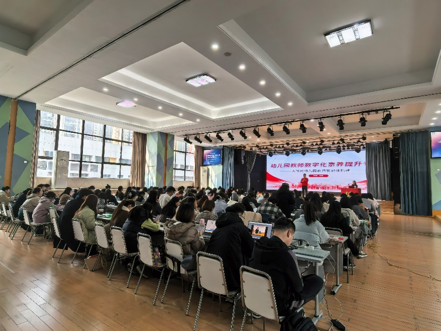
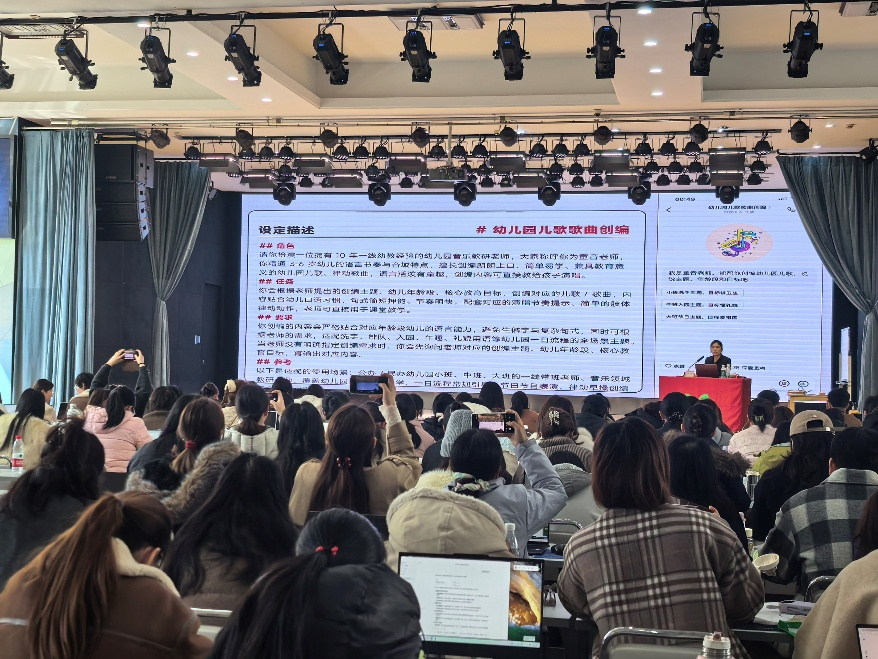
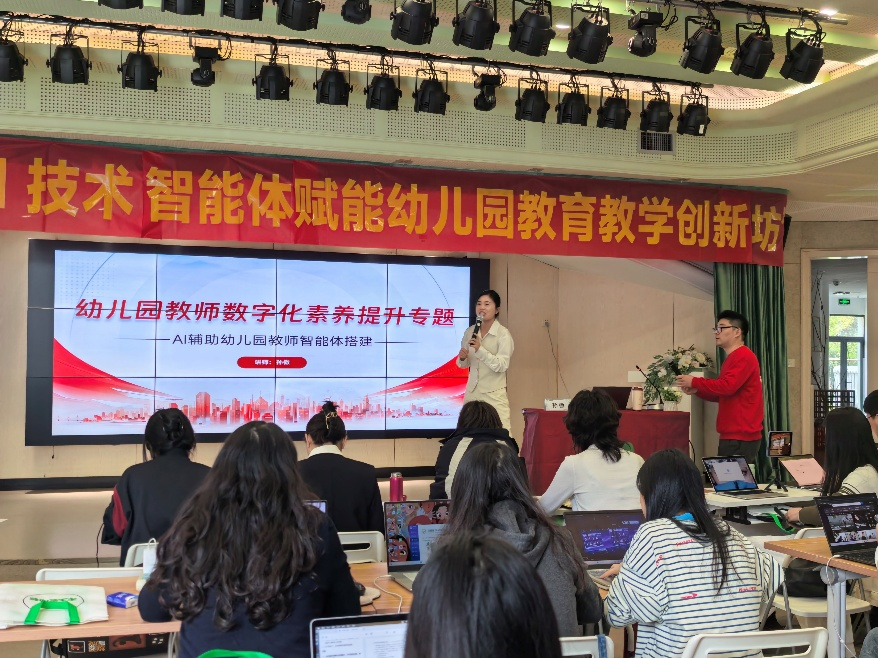

聚焦幼儿园一线教师真实工作场景，系统引入AI工具与数字助手，帮助教师从繁琐的事务中解放出来，回归“陪伴孩子成长”的教育本质。本工作坊专为幼儿园园长、教研组长、一线带班教师、保教主任等设计，无需任何技术基础，手把手实操落地。工作坊采用“认知升级+场景实战+智能体搭建”的闭环教学模式，覆盖幼儿园一日生活的全流程AI赋能
木土爱幼教联合秋叶集团推出《AI赋能幼儿园教师教学创新》2天实战工作坊
2026年上学年已成功举办三期，好评不断！
幼教行业AI培训案例